6.S198 Assignment 4
Name: Binh Le
E-mail: binhle@mit.edu
Other Assignments:
Section 1.1: Visualizing datasets using the embedding projector
Spend some time using the embedding projector to make and share observations about the MNIST data. Do the
different digits separate into distinct clouds? Are there images that are in the wrong cloud, and can you make
sense of why they are wrong? Are there images that are outliers from the rest of the data? Are there digits
that seem more separate from the others, and are there pairs of digits that are more easily confused?:
- For the most part, different digits do separate into different clouds but there are some digit clouds that
overlap with another digit.
-
There are digits that are in the wrong clouds like one of the 2's but this is
because the 2 is written very unconventionally. It would be difficult for me to tell that the image is
clearly
a 2.
-
There are few outliers from the rest of the data but usually those that are written poorly or
unconventionally.
-
The 1's digit cloud seems separate from the rest of the data because the single straight
stroke is very distinct.
-
Some other digits are more confused because they have more intricate strokes and a
variation of ways they can be drawn. For example, the digit clouds for 7 and 9 has a lot of overlap because
they can be written similarly, the main difference is the closed loop at the top of the 9.
Section 1.3: Word geometry
Experiment with various words to see if you can identify
any insights about the data set. For example, try “politics” along the dimension from “bad” to “good”, or
“engineer” along the spectrum from “man” to “woman”. Write up some notes on your observations, perhaps
supplemented with a few pictures. Do you get different or better results if you use Word2Vec All instead of
10K? Did you find any interesting examples that speak to how words are used news articles? Write up what you
experimented with and what conclusions you drew.
- When piano is searched while the left word is violin and the right word is drum, the horizontal distance
piano is away from each of those words represents its relative frequency next to violin and drum. The other
words shown that are closer to violin appear more often next to violin than drum and the same principle
goes for the other words that are closer to drum.
-
When politics is searched along bad to good, it is closer to bad. This shows that politics is probably used
in a more negative sense when there is an event that makes the news.
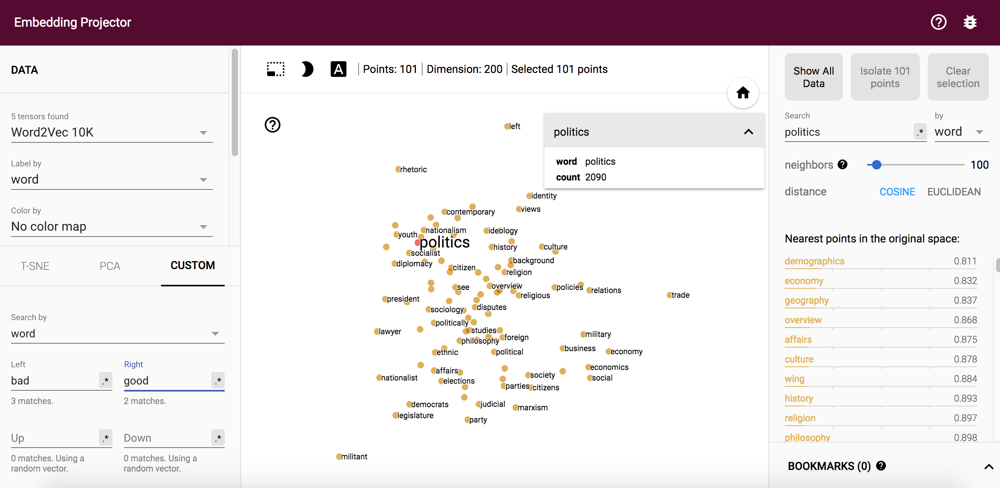
-
When soldier is searched along man to woman using Word2Vec 10k, it is suprisingly closer to woman. Although
the number of men
serving is more than the number of woman, maybe news articles are more inclined to mention some is a
solider if they are a woman because it is rarer.
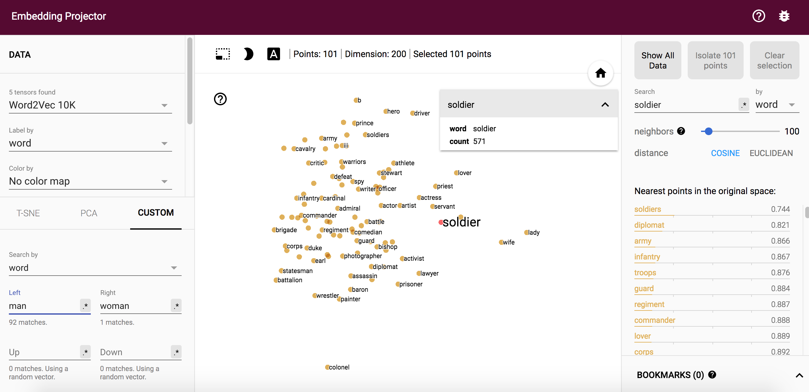
-
When soldier is searched along man to woman using Word2Vec All, soldier ends up more in the middle of the
two words compared to the 10k. This is probably more expected because given more data, there are more men
in the army that can be referenced in these articles than woman.
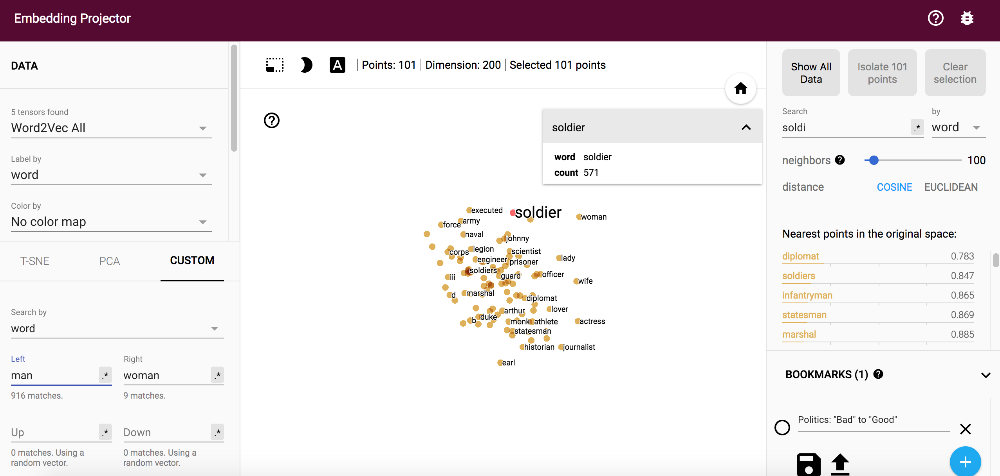
-
These experiments show that a lot of news articles are opiniated and have biases. This is shown when
Christianity and its nearest neighbors are shown along good to bad. We all have the freedom of religion and
which religion we align ourselves with is usually neutral. However, on this plot, we see that Christianity
is closer to good while other religions such as Islam, Judaism, and Muslim are further from good. This
shows that news articles do include biases which should be considered when reading the information.
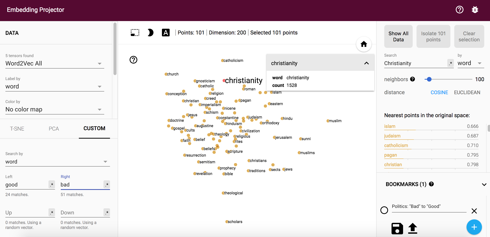
Section 1.4: Finding word analogies with vector algebra
Spend a few minutes experimenting with the demo which uses Word2Vec vector algebra to solve analogies. Make a
note of any interesting examples you find:
-
Math is to Equation as Physics is to Fermionic Atoms.
-
School is to Bus as Work is to Cab.
-
Girl is to Boy as Up is to Down.
-
East is to Boston as West is to Seattle.
-
Esports is to Game as Football is to Play.
-
First is to MIT as Last is to Harvard.
Section 1.5: Exploring fonts with the embedding projector
1. View the fonts with PCA embedding. Do you see any clumps/areas with obvious characteristics? Record a few
Font IDs for distinct characteristics/groupings that you find interesting (hover over a character to get its
font ID), such as bold, italics, cursive...etc.
-
There are some clumps with shared characteristics such as those with smoother lines instead of sharp
corners. Some font IDs for this group are: 6477, 6022, 8180, and 7120.
-
Another group has characters slightly leaned over to the right, some font IDs included are: 3314, 3311,
3312, and 4139.
-
Some of the bolder fonts are also grouped together, including the fonts: 612, 2889, 646, and 2073.
2. Change to the embedding to T-SNE. Record how many iterations you let T-SNE run for for and whether
or not you were able to get interesting groupings. Again, record Font IDs for interesting fonts/groupings.
-
I used T-SNE with 2679 iterations. This was enough in order to see clusters and groupings distance
themselves away from the rest of the fonts.
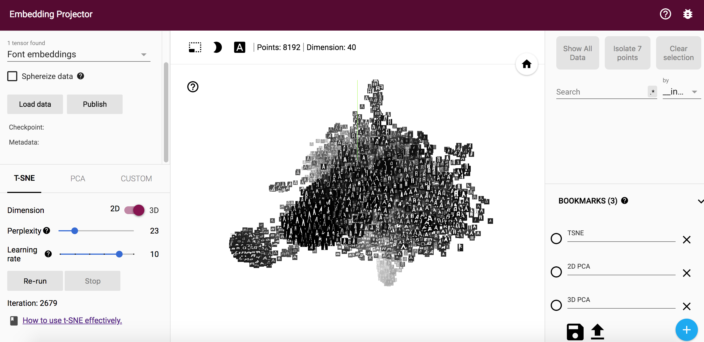
-
Fonts with thinner lines and a more italic style were grouped, the IDs included: 449, 4612, 1918, and 7389.
-
Another group had fonts with a longer height and slimmer width style, these fonts included: 7495, 5663,
6076, and 7477.
3. Find a font you like, get its ID, and type that into the search bar at the right-hand side of the
screen. Use the "neighbors" slider to isolate a few dozen points and record the Font IDs of the 10 nearest
neighbors that make sense. Repeat this for 3 or 4 fonts. If you find a font that doesn't have nearest neighbors
that look similar, note that down as well.
-
Font #2223, Nearest Ten Fonts: 2234, 4404, 4403, 2737, 3712, 2235, 7825, 5813, 2236, and 6005
-
Font #5644, Nearest Ten Fonts: 5642, 5643, 395, 7920, 23, 7637, 3869, 3870, 394, and 3868
-
-
Font #6463, Nearest Ten Fonts: 6501, 7021, 6492, 1897, 4149, 3763, 1896, 1187, 6687, and 4329
Section 2.3: Generating new fonts
0. Edit FontModel.js so another character besides "r" is being displayed as the sample character for the 40
attributes. Edit Alphabet.vue so that all of the uppercase, lowercase, and numerical sample font characters are
displayed in the right side of the screen instead of just the lowercase characters. Take a screenshot for your
writeup.
-
"b" is now displayed as the sample character and it shows uppercase, lowercase, and numbers on the right
side of the screen.
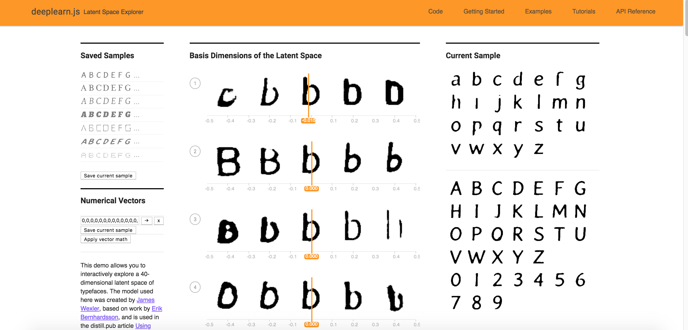
1. Edit VectorChooser.vue to add a new button under the "Apply vector math" button. The new button should show
the font Id of the "nearest neighbor" font that is "most similar to" the current font, out of all the fonts in
the 50K training set.
-
Using a bolder font:
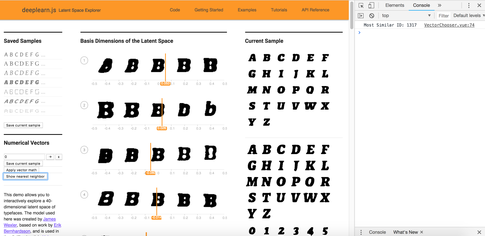
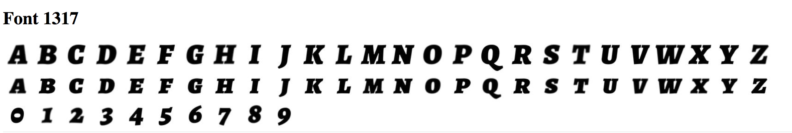
-
Using a dotted type font:
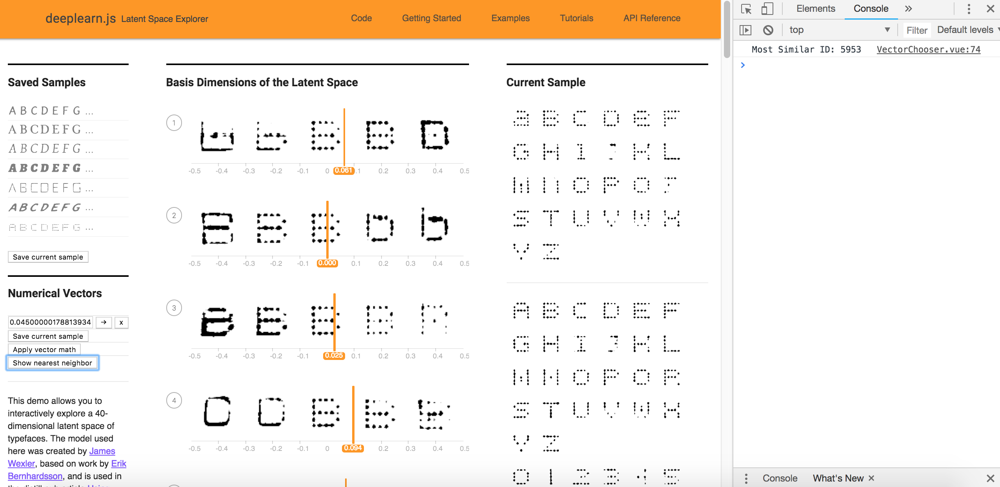
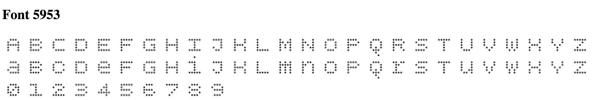
-
When the nearest font is less similar with added curls:
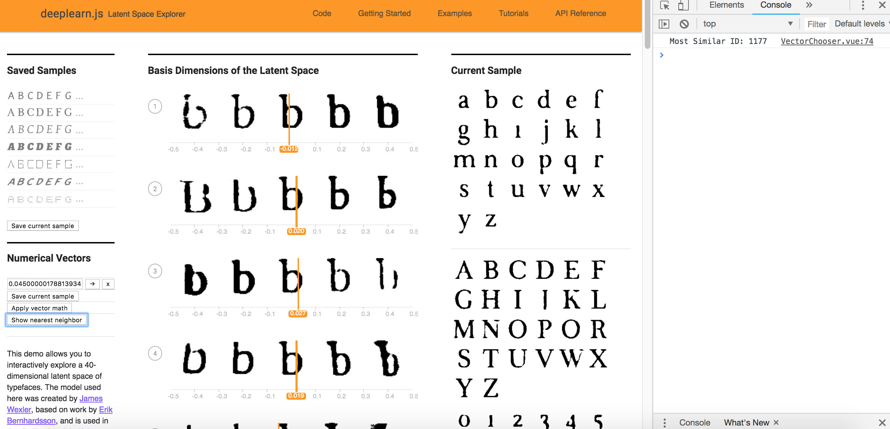
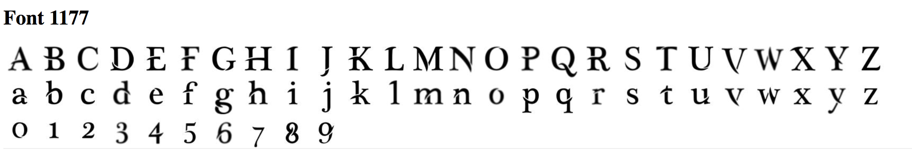
2. What is the “average” of a set of fonts? (Hint: What does that mean in terms of the 40 dimensions)? Write
some code to Find the nearest font neighbor to the average font.
-
The average font is the font with vector values that are the average for each of the 40 dimensions.
-
The nearest font neighbor to the average font is 23607 which turns out to be pretty surprising.
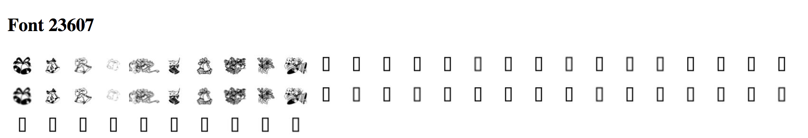
3a. What does adding this vector to a font do? Does it perform bolding well at thickening the original font? Are
there other characteristics that seem to also carry over? Try this with another characteristic. It may be
helpful to use the characteristics you gathered previously.
-
Adding the vector does seem to add bolding to the original font.
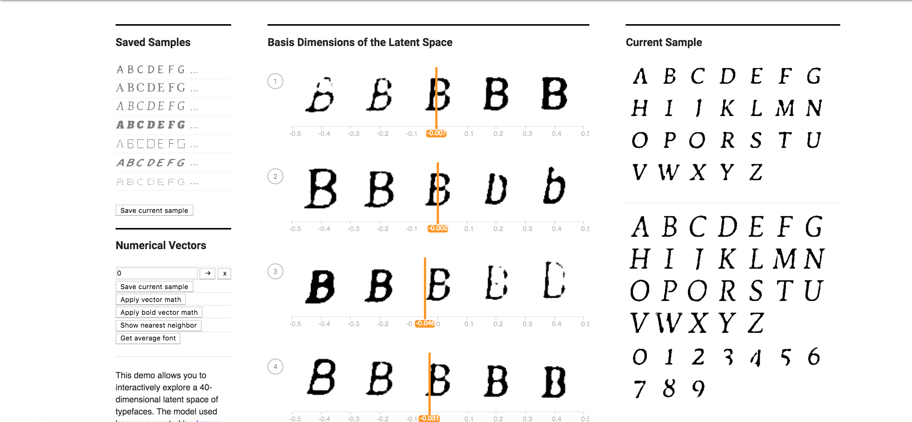
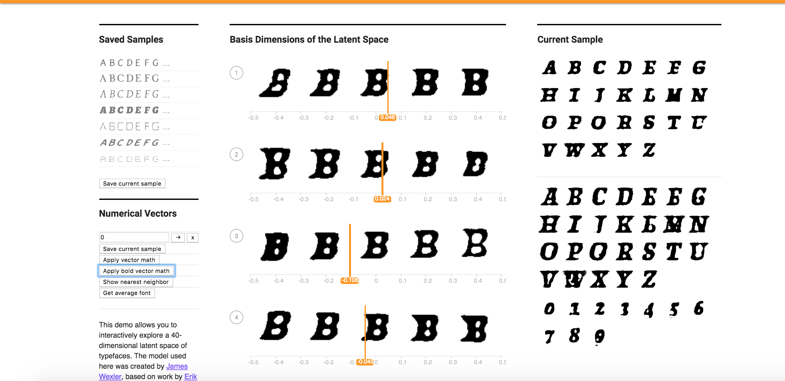
-
However, the general smoothness of the strokes is one characteristic that carries over. Sharp corners still
remain corners and smooth edges and still smooth.
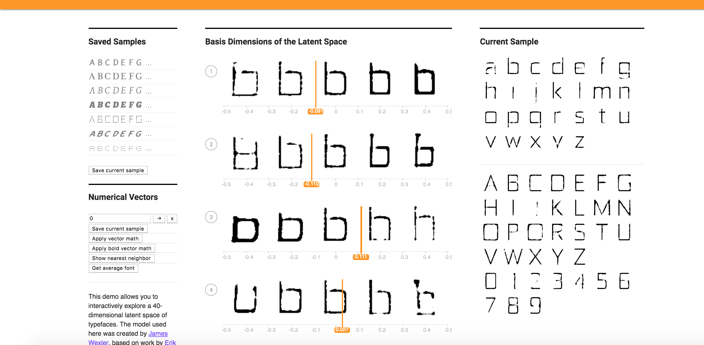
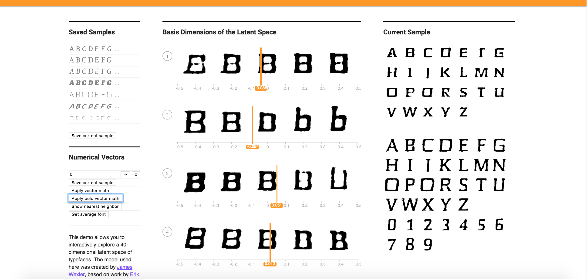
3b. Find 10 fonts for a specific quality (i.e. bolding, dotting, fancy, serif...etc) and average them out to
find a characteristic vector (for example, “bolding vector”). Try applying that vector to another font. Again,
you can do this by manual computation and then modifying the added vector in the "Apply Vector Math" button, or
you can make new buttons. Does it work better or worse than the previous one-sample method? Try this with at
least 2 characteristics.
- The transformations below are made from this starting font:
-
Finding 10 fonts with bold and then applying vector math bold - 10 button. It looks like it has about the
same effect as the single bold when applied.
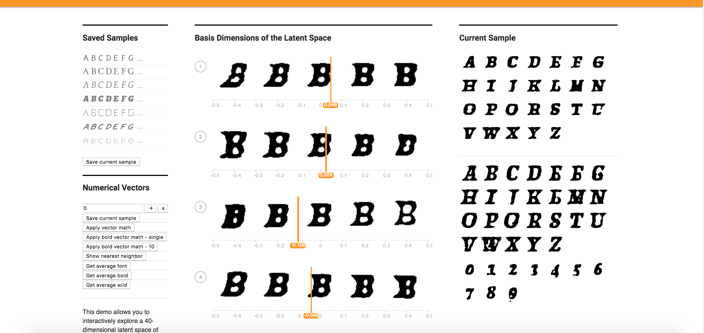
-
Finding 10 fonts with more unique and wild styles and then applying vector math bold - 10 button.
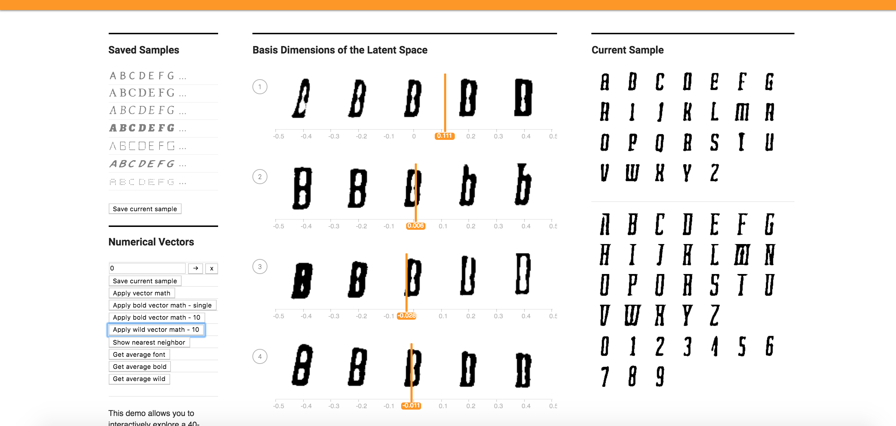
3c. Find 10 fonts the exhibit for a specific characteristic and 10 fonts for the opposite of that
characteristic (i.e. bold vs. corresponding non-bold). Subtract the vectors for each pair and take the average
difference. How does this work as a vector for the characteristic (e.g., as a "bolding vector")? Does this work
better or worse than the method above to obtain your desired characteristic? Try this with at least 2
characteristics.
-
Finding 10 fonts with bold and then 10 with non bold fonts while taking the average difference between
pairs resulted in an extremely bold font when this was applied.
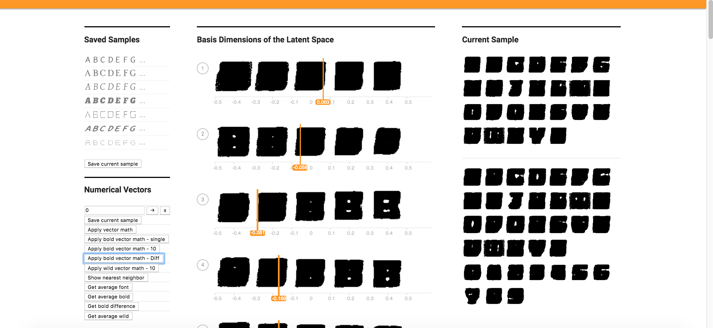
-
Finding 10 fonts with background and then 10 with non background fonts while taking the average difference between
pairs resulted in a large background presence font when this was applied.
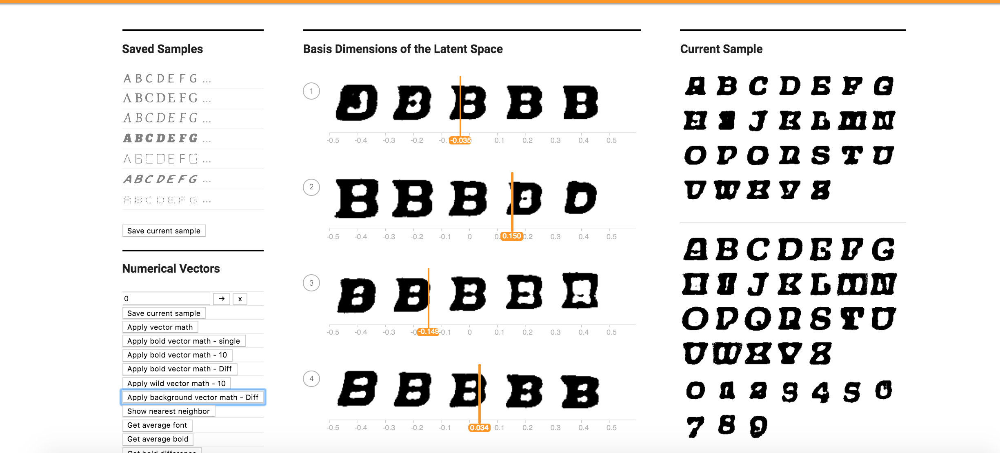
4. Can you figure out how to create a vector that makes uppercase fonts lowercase? (Hint: You can try finding
fonts that only have uppercase/lowercase characters and finding analogous vectors, or you can try playing with
the 40 attribute sliders directly.)
-
Applying this lowercase vector does a pretty good job of making the upper and lower case letters of a font similar.
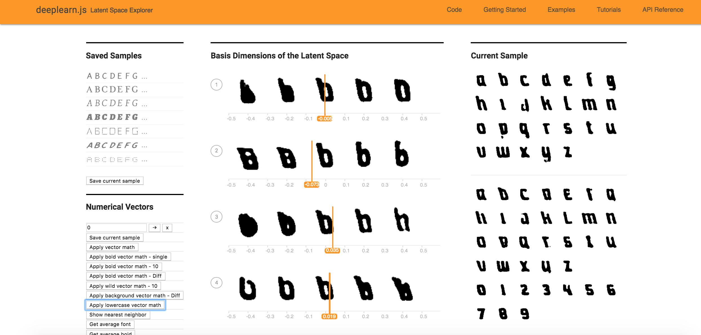
5. Can you create a vector based on your personal font tastes (i.e. a personal-likeable vector)? Please also
make note of any interesting vector directions you find.
-
I chose a favorite vector that represents a style with thick and curly edges which really make the letters stand out.
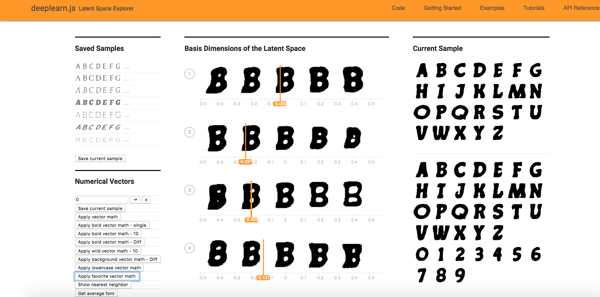
6. Code links in text format